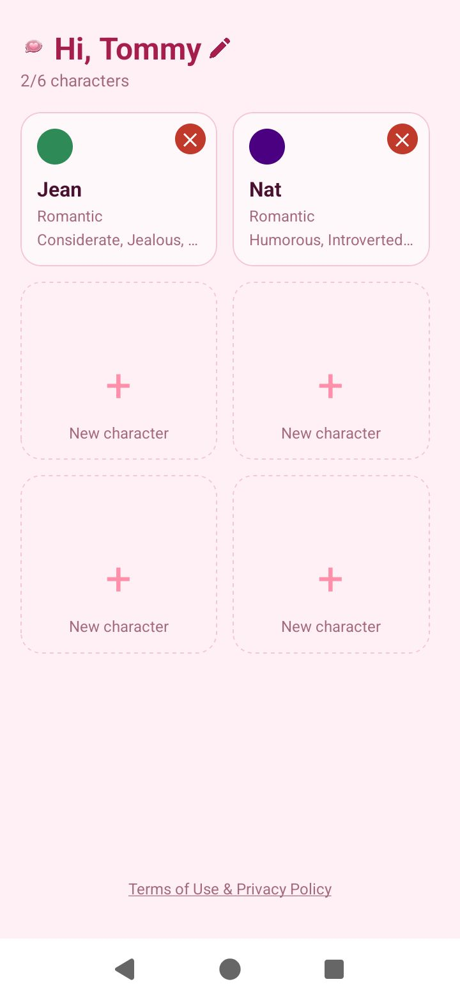
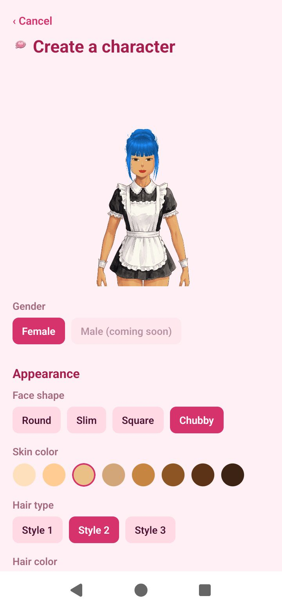
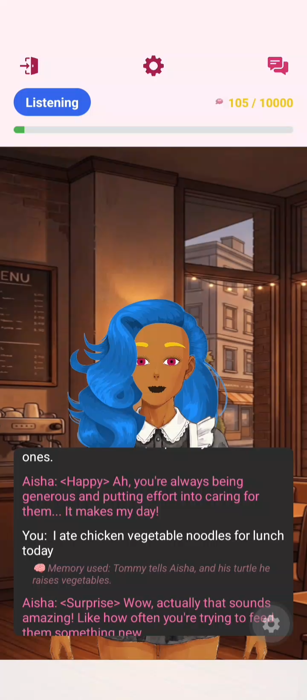
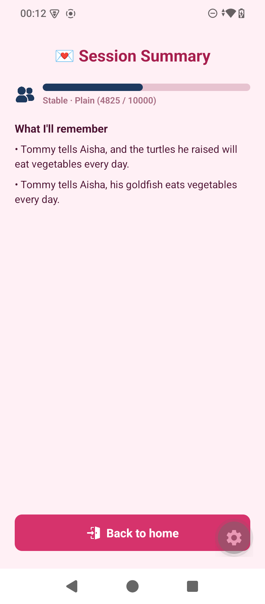
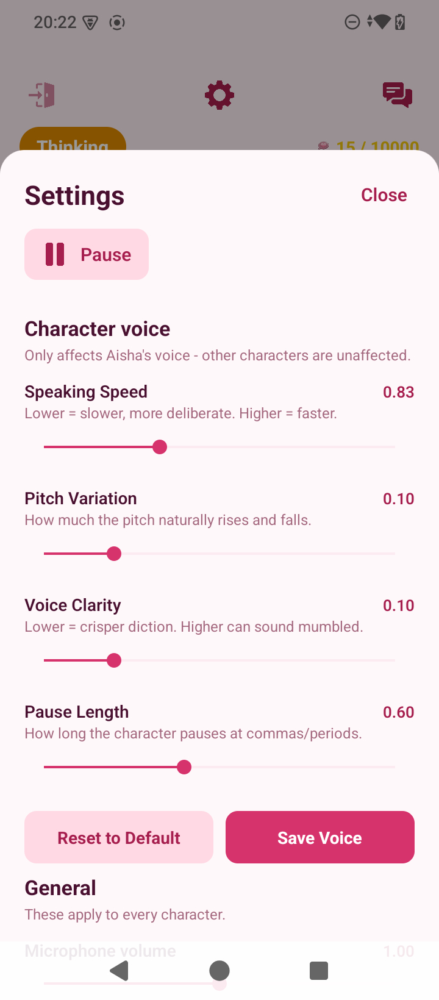

Pocket Romance
An offline, on-device AI companion for Android — customisable characters with persistent memory, emotional voice, and 2D animation, all running locally on the phone with no server backend. Originally prototyped in Unity as a text-only concept; rebuilt from the ground up in React Native once the design called for real on-device LLM + voice inference. Currently in closed testing on Google Play, targeting a full public release before September 2026.
A companion that lives entirely on your phone
Pocket Romance is a fully offline mobile game/app: the player creates a character (appearance, personality, relationship style) and talks to them by voice. Everything — speech-to-text, the language model generating replies, the emotional text-to-speech, and the on-screen 2D character animation — runs locally after a one-time model download. There is no server backend and no network dependency once the app is set up.
The core interaction loop is listen → transcribe → generate → speak → animate, streamed end-to-end so the character starts speaking as soon as the first sentence of its reply is ready, rather than waiting for the whole response. Replies carry a hidden emotion tag that simultaneously drives the character's facial animation, the voice's emotional inflection, and a relationship score that shifts how the character talks to the player over time.
The project ships with a fine-tuned small language model (via a custom synthetic-data pipeline) and 12 emotion-specific TTS voices (trained per-emotion on top of Piper/VITS) — both built as sibling projects that feed into the app rather than generic off-the-shelf models.
Listen → think → speak → animate, streamed
Each turn overlaps decoding and synthesis instead of running the pipeline strictly in sequence, which is what keeps response latency down on budget hardware.
LLM subsystem
Inference runs through llama.rn (llama.cpp bindings) on CPU, running a
LoRA-fine-tuned Qwen3.5-0.8B GGUF model. The fine-tuning dataset is synthetic:
a separate pipeline uses a local Ollama model to play the user, the companion, and an
independent emotion-judge, generating thousands of tagged conversations through an
8-stage quality gate (format checks, tone matching, repetition and generic-filler detection,
then an LLM-as-judge pass as the final and most expensive check).
A sliding-window context strategy evicts the oldest turns once the conversation approaches the model's context limit, and generation is capped and interrupted if it detects a degenerate repeated-phrase loop — a documented failure mode on small models that can otherwise run away and OOM the device.
Voice pipeline (STT / VAD / TTS)
TTS is Piper (VITS) via sherpa-onnx, synthesized as
streaming PCM rather than batching a full reply — batch synthesis cost ~6
seconds just to marshal audio across the JS bridge for a single sentence, which streaming avoids
entirely. STT is Moonshine-tiny (int8), and VAD uses a
custom polling loop over a rolling window rather than the underlying library's documented
streaming API, which held a single-flight lock across the whole session and made turn-taking
unreliable.
Long-term memory & RAG
Facts are extracted from the conversation at the end of a session (up to 2 per session), then reduced to English keywords in a separate, later pass — deliberately split into two stages after testing showed a single combined extraction prompt produced generic, unusable keywords, and to avoid running two concurrent native LLM contexts at once. At runtime, a fact is only injected into the prompt if it shares at least two keywords with what the player just said, favoring precision over recall so the character doesn't reference the wrong memory. Near-duplicate facts are filtered out with Jaccard bigram similarity before they're even stored.
Character rendering & storage
Characters are layered 2D sprites (hair/outfit/head/eyes/mouth) composited and recolored live via
SVG tint filters rather than pre-baked art per color option. Mouth movement is split into
independently animated strips driven by react-native-reanimated worklets — plain
React Native Animated stalled under the JS-thread contention created by Piper's
chained synthesis promises. All game state (characters, facts, settings) is stored as plain
local JSON files rather than SQLite, matching the project's general preference for minimal
native dependencies.
Trade-offs behind the system
Running everything on-device on budget Android hardware means almost every decision below is a deliberate quality-vs-speed (or reliability-vs-flexibility) call, not a default.
The in-game Settings panel exposes the exact Piper synthesis parameters (speaking speed, pitch variation, voice clarity/noise scale, pause length) as sliders, saved per character. The shipped default sits at a balanced point — clear enough diction without sounding robotic, fast enough not to stall the reply — but higher clarity settings cost more synthesis time per sentence, and players on faster phones can push quality further while players who value snappier responses can trade some clarity for speed.
A single fixed setting either sounds mediocre on flagship phones that could afford better quality, or feels laggy on budget devices. Sliders (not free-text fields) keep values inside ranges that have actually been tested, so players can tune to their device and taste without being able to produce a broken-sounding voice.
Settled on a LoRA-fine-tuned Qwen3.5-0.8B after a long elimination round —
several 0.5B–1.7B candidates either leaked <think> reasoning tags into
the reply, hung on export bugs, segfaulted, or were simply too slow on-device. Moving off
ExecuTorch's .pte path onto llama.rn (llama.cpp) fixed reliability
across the board.
A model this small isn't naturally good at staying in character or following the emotion-tag format — hence the custom synthetic dataset and multi-stage LoRA fine-tune, which is meaningfully more project overhead than calling a hosted API, in exchange for zero inference cost and full offline operation.
The LLM's output is split into sentences as it streams, and each finished sentence is
handed to Piper immediately, overlapping decode and synthesis instead of waiting for the
full reply. numThreads: 1 on the TTS engine keeps it from starving the STT/LLM
threads it runs alongside.
Batch synthesis of a full reply is simpler to reason about and avoids mid-reply audio glitches, but it measured at roughly 6 seconds of bridge-marshalling overhead for one sentence — an unacceptable delay before the character says anything at all.
A stored fact is only injected into the prompt when it shares at least two keywords with the player's live transcript. This keeps the character from confidently referencing the wrong memory in front of the player — a highly visible failure in a conversational character app.
A stricter threshold means some genuinely relevant facts go unused if the player phrases things differently than they did originally — recall is deliberately sacrificed for precision, which is the axis the current roadmap's RAG improvements are aimed at.
Inside the app
Captured on a Redmi A5 — a deliberately low-end device to demo worst-case performance.

Character select — up to 6 slots per player

Character creation — appearance feeds the sprite compositor

Live memory recall — "Memory used" tag shows RAG in action

Session summary — extracted facts and relationship progress

Voice tuning settings — the quality/speed trade-off, in the player's hands
Post-launch roadmap
- Push Piper voice and LLM reply quality further without regressing response latency on budget devices
- Expand character content — more personalities, voices, and relationship scenarios
- Improve the RAG/memory pipeline — better recall without sacrificing the precision the current design prioritizes
- Full public Play Store release, targeted before September 2026